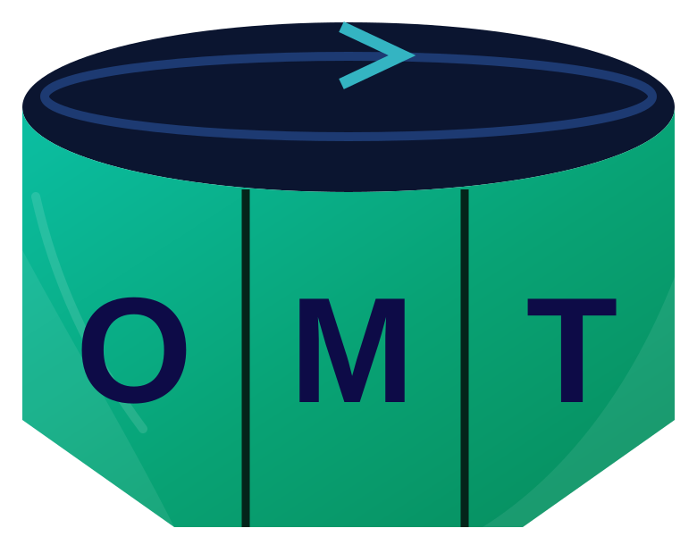

OMT AI Assistant
Find books and resources, get an overview of a resource, or have a difficult concept explained step by step.

OMT AIChecking…Suggested prompts
Press Enter to send, Shift + Enter for a new line. AI can make mistakes, so check important facts with the source.